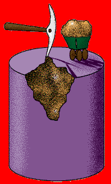
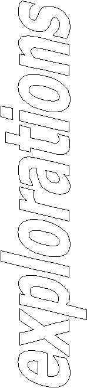

Association for
Computing Machinery
Newsletter of the Special
Interest Group (SIG) on
Knowledge Discovery &
Data Mining
June 2000. Volume 2, Issue 1
Editorial by
P. S. Bradley, S. Sarawagi, and U. M. Fayyad
(available in PDF)

Editor-in-Chief:
Usama Fayyad
Associate
Editor:
Sunita Sarawagi
I.I.T. Bombay
sunita@it.iitb.ernet.in
Guest Editor:

Data Mining & Knowledge Discovery, An International Journal
Contributed Articles on "Internet Data Mining"
Web Mining Research: A Survey
R. Kosala and H. Blockeel
(available in PDF)
ABSTRACT: With the huge amount of information
available online, the World Wide Web is a fertile area for data mining
research. Web mining research is at the cross roads of research from
several research communities, such as database, information retrieval, and
within AI, especially the sub-areas of machine learning and natural
language processing. However, there is confusion when comparing
efforts from different points of view. In this paper, we survey the
research in the area of Web mining, point out some confusion regarding
usage of the term Web mining and suggest three Web mining
categories. We then situate some of the research with respect to
these three categories. We also explore the connection between the
Web mining categories and the related agent paradigm. For the
survey, we focus on representation issues, on the process, on the learning
algorithm, and on the application of the recent works as the
criteria. We conclude the paper with some research issues.
Web for Data Mining: Organizing and Interpreting
the Discovered Rules using the Web
Y.
Ma, B. Liu, and C. K. Wong
(available in PDF)
ABSTRACT: The
web not only contains a vast amount of useful information, but also
provides a powerful infrastructure for communication and information
sharing. In this paper, we present a system (called DS-Web) that uses the
web to help data mining. Specifically, we use the web to facilitate
delivering and interpreting the discovered rules. Interpreting the
discovered rules to gain a good understanding of the domain is an
important phase of data mining. It is also a very difficult task because
the number of rules involved is often very large. This problem has been
regarded as a major obstacle to the use of data mining results. DS-WEB
assists the user in understanding a set of discovered rules in two steps.
First, it finds a special subset (or a summary) of the rules that
represents the essential relationships of the domain to build a
hierarchical structure of the rules. It then publishes this hierarchy of
rules via multiple web pages connected using hyperlinks. By using the web,
we inherit the advantages of the web, e.g., accessibility, multi-user
communication and friendly interface. DS-WEB not only allows the user to
browse the rules easily, but also allows us to create a virtual workspace
where multiple users can share opinions on the rules. This ultimately
contributes towards comprehension of the domain. Our application
experiences show that DS-WEB is much more powerful than a conventional
system.
Data Mining Models as Services on the Internet
S. Sarawagi and S. H. Nagaralu
(available in PDF)
ABSTRACT: The
goal of this article is to raise a debate on the usefulness of providing
data mining models as services on the internet. These services can
be provided by anyone with adequate data and expertise and made available
on the internet for anyone to use. For instance, Yahoo or Altavista,
given their huge categorized document collection, can train a document
classifier and provide the model as a service on the internet. This
way data mining can be made accessible to a wider audience instead of
being limited to people with the data and the expertise. A host of
practical problems need to be solved before this idea can be made to
work. We identify them and close with an invitation for further
debate and investigation.
Concept-Based Knowledge Discovery in Texts Extracted
from the Web
S.
Loh, L. K. Wives, and J. P. de Oliveira
(available in PDF)
ABSTRACT: This paper presents
an approach for knowledge discovery in texts extracted from the Web.
Instead of analyzing words or attribute values, the approach is based on
concepts, which are extracted from texts to be used as characteristics in
the mining process. Statistical techniques are applied on concepts in
order to find interesting patterns in concept distributions or
associations. In this way, users can perform discovery in a high level,
since concepts describe real world events, objects, thoughts, etc. For
identifying concepts in texts, a categorization algorithm is used
associated to a previous classification task for concept definitions. Two
experiments are presented: one for political analysis and other for
competitive intelligence. At the end, the approach is discussed, examining
its problems and advantages in the Web context.
Fine Grained Heuristic to Capture Web Navigation
Patterns
J.
Borges and M. Levene
(available in PDF)
ABSTRACT: In
previous work we have proposed a statistical model to capture the user
behaviour when browsing the web. The user navigation information,
obtained from web logs, is modelled as a hypertext probabilistic
grammar (HPG) which is within the class of regular probabilistic
grammars. The set of highest probability strings generated by the
grammar corresponds to the user preferred navigation trails. We have
previously conducted experiments with a Breadth-First Search algorithm (BFS)
to perform the exhaustive computation of all the strings with probability
above a specified cut-point, which we call the rules.
Although the algorithm's running time varies linearly with the number of
grammar states, it has the drawbacks of returning a large number of rules
when the cut-point is small and a small set of very short rules when the
cut-point is high.
In this work, we present a new heuristic that implements an iterative deepening search wherein the set of rules is incrementally augmented by first exploring trails with high probability. A stopping parameter is provided which measures the distance between the current rule-set and its corresponding maximal set obtained by the BFS algorithm. When the stopping parameter takes the value zero the heuristic corresponds to the BFS algorithm and as the parameter takes values closer to one the number of rules obtained decreases accordingly.
Experiments were conducted with both real and synthetic data and the results show that for a given cut-point the number of rules induced increases smoothly with the decrease of the stopping criterion. Therefore, by setting the value of the stopping criterion the analyst can determine the number and quality of rules to be induced; the quality of a rule is measured by both its length and probability.
Contributed Articles
Scalability for Clustering Algorithms Revisited
F. Farnstrom, J. Lewis, and C. Elkan
(available in PDF)
ABSTRACT: This
paper presents a simple new algorithm that performs k-means
clustering in one scan of a dataset, while using a buffer for points from
the dataset of fixed size. Experiments show that the new method is
several times faster than standard k-means, and that it produces
clusterings of equal or almost equal quality. The new method is a
simplification of an algorithm due to Bradley, Fayyad and Reina that uses
several data compression techniques in an attempt to improve speed and
clustering quality. Unfortunately, the overhead of these techniques
makes the original algorithm several times slower than standard k-means
on materialized datasets, even though standard k-means scans a
dataset multiple times. Also, lesion studies show that the
compression techniques do not improve clustering quality. All
results hold for 400 megabyte synthetic datasets and for a dataset created
from the real-world data used in the 1998 KDD data mining contest.
All algorithm implementations and experiments are designed so that results
generalize to datasets of many gigabytes and larger.
Algorithms for Association Rule Mining -- A General
Survey and Comparison
J.
Hipp, U. Güntzer, G. Nakhaeizadeh
(available in PDF)
ABSTRACT: Today
there are several efficient algorithms that cope with the popular and
computationally expensive task of association rule mining. Actually,
these algorithms are more or less described on their own. In this
paper we explain the fundamentals of association rule mining and moreover
derive a general framework. Based on this we describe today's
approaches in context by pointing out common aspects and
differences. After that we thoroughly investigate their strengths
and weaknesses and carry out several runtime experiments. It turns
out that the runtime behavior of the algorithms is much more similar than
expected.
Understanding the Crucial Differences Between
Classification and Discovery of Association Rules -- A Position Paper
A. A. Freitas
(available in PDF)
ABSTRACT: The goal
of this position paper is to contribute to a clear understanding of the
profound differences between the association-rule discovery and the
classification task. We argue that the classification task can be
considered and ill-defined, non-deterministic task, which is unavoidable
given the fact that it involved prediction; while the standard association
task can be considered a well-defined, deterministic, relatively simple
task, which does not involve prediction in the same sense as the
classification task does.
Workshop Reports
NASA Workshop on Issues in the Issues in the
Application of Data Mining to Scientific Data
J. Behnke and E. Dobinson
(available in PDF)
ABSTRACT: In
this paper, we describe the NASA sponsored workshop on Issues in the
Application of Data Mining to Scientific Data. The workshop was held
at the University of Alabama in Huntsville on October 19-21, 1999.
The full text of the report can be found in PDF and MSWord format at the
following website: http://www.cs.uah.edu/NASA_Mining/
Report on WebDB'2000: 3rd International
Workshop on the Web and Databases
D.
Suciu and G. Vossen
(available in PDF)
ABSTRACT: This
short report is on the 3rd International Workshop on the Web and Databases
(WebDB). It summarizes the technical program and gives pointers to
places where further information can be obtained.
Workshop Report: 2000 ACM SIGMOD Workshop on
Research Issues in Data Mining and Knowledge Discovery
D. Gunopulos and R. Rastogi
(available in PDF)
Events and Announcements
(available in PDF)
join SIGKDD today!